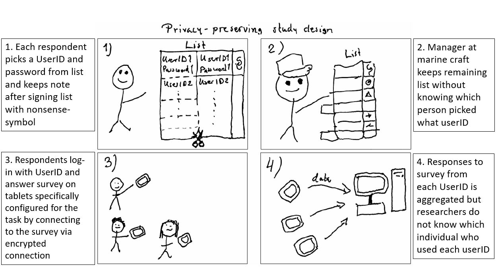
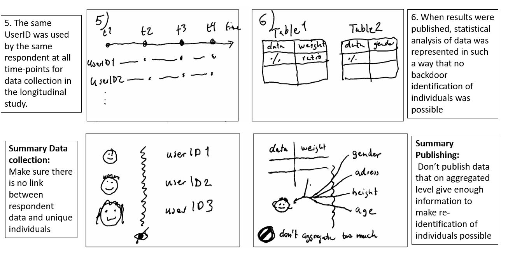

Confidential data - Personal information and privacy
Key takeaways
- The General Data Protection Regulation applies to any research processing personal information.
- Protecting the privacy of any individuals participating in research studies is of highest priority.
- Some categories of personal information is considered sensitive. For such data, extra security measures to ensure privacy are needed.
- Ethical review and approval is needed when research involves sensitive personal data.
- It is sometimes possible to anonymise or de-identify personal data, but this requires special care.
- Everyone involved in a project should be aware of the confidentiality level of the personal data, and know how to work with that type of information.
When working in a research project where personal data is processed, it is important to consider how to protect the privacy of the individuals concerned. Any processing of personal data need a lawful basis and the processing should be registered at the KTH register of personal data processing
Normally the lawful basis for processing personal information in research is public interest, but if you are unsure or want to know more, check out the KTH research data web pages or KTH pages on GDPR. If you conduct a study involving humans, or otherwise collect personal data, the persons whose information you process are called data subjects.
If you collect personal data, you will need to identify who will be the data controller for collection, storage and handling of the data.
A breach of confidentiality where personal information can be accessed for people without permission may present a risk of serious harm to the data subject. Since that risk depends on the type of personal data and also if the people for instance belongs to a group with higher vulnerability it’s a good idea to assess the risk and confidentiality level needed for that data.
Some personal information that already before was available to the public with the consent of the data subject hardly causes any harm and thus poses minimal risk if shared in a research project, whereas other information is more privacy sensitive. If there is high risk involved that concern data subject rights and freedoms you should conduct a Data Privacy Impact Assessment (DPIA) before processing any personal data. In that case, contact the Data Protection Officer at dataskyddsombud@kth.se before starting your study.
If the information can be connected to unique individuals and is considered to be sensitive you need to apply for an ethical approval before you conduct your research. Sensitive personal data is either belonging to the special categories of personal data according to article 9 in GDPR or concerns persons where informed consent from these individuals may be problematic, such as children. There is more information on research ethics and the ethical review process on the KTH research ethics page.
The Special categories of Sensitive personal data concerns an individual’s:
- Ethnical origin
- Political views
- Religious or philosophical convictions
- Membership in a Union
- Health
- Sexual life or sexual orientation
- Genetic information
- Biometric data that specifically identifies a unique person
In the ethical approval it is important to ensure that you take appropriate measures that sufficiently minimize risks of data leakage. According to GDPR art. 32, appropriate technical and organizational measures to ensure a level of security appropriate to the risk should be taken. A more practical guide on what this means for you at KTH is under development. It is also important that all participants have given their informed consent to participate in the research study.
It is recommended to consider privacy-preserving methods in the study design so that you minimize risks. How to do that may differ depending on type of study, but here we illustrate that with a use case from a KTH research project.
Use case
Pahansen de Alwis, KTH researcher at the SCI school, has together with colleagues performed studies where occupants of marine crafts responded to a survey with questions about work exposure and health. Since health information is sensitive when it can be connected to unique individuals, it was important to carefully design the study in order to ensure preservation of privacy for individuals responding to the survey. It was also necessary to apply for an ethical approval. Pahansens advice to other researchers is to start early with the application for ethical approval and that it is really good with help from someone who has knowledge of the process when drafting the application. An overview of the study design can be seen in the illustration below.


In this study, the researchers were not aware of which individual who had what respondent-id and these individuals responded to the online survey on an encrypted network and data was stored encrypted as well.
When publishing results, Pahansen et al also made sure to display results from the studies as aggregated % or ratios in different tables and figures in order not to make it possible to indirectly identify unique individuals from combination of traits (gender, weight, etc. ) via backdoor identification / re-identification [1], [2], [3]]. Adding more variables to your dataset will increase the probability for re-identification [4] .
Considerations for collaboration projects:
Let’s reiterate that it is highly recommended to share the data management plan with everyone in the project and make sure that everyone is informed on correct data management according to plan. The challenge of working with confidential personal data in collaborations is that the personal data is shared between different organizations. It is therefore important to have proper data processing agreements (DPA’s) in place before data is shared. Contact your local contract coordinator or the KTH legal counsel for advise and assistance with drafting such an agreement. If you also think your data could be “high risk” concerning privacy of individuals, you should make a data protection impact assessment early on in your process.
You can adopt different strategies for dealing with privacy-sensitive data. One option is to de-identify data before processing it (like in the Use case with Pahansen et al), thus avoiding collecting the information that identify the unique individuals.
You may also consider if you want to work according to a strategy of: “Bring data to compute” or “Bring compute to data” or “Streaming data on-demand for joint processing” . In the case of bringing data to compute, personal data is transferred from one stakeholder to another so there need to be a data processing agreement signed by both stakeholders. If one stakeholder only perform computation on encrypted data without access to the personal information kept within another organization, a data processing agreement should not be necessary. In the third case, transfer of personal information may have to be regulated in a non-standard agreement.
Which strategy that is best for the collaborative project depends on both the type and amount of data and the type of processing you plan for as well as resources and legal framework for different collaboration partners. So it is good to discuss strategy early on and draft a data management plan together.
In the interview with Martin Isaksson he mentions different privacy-preserving methods. In his research he works with user-generated privacy sensitive data from networks, information that is not appropriate to gather in one place - so here a strategy of bringing compute to data is more appropriate [5]. In the section on re-use of data, you can also listen to how Martin describes the use of open data-sets to avoid using real user data, thus avoiding both privacy-sensitive and business-sensitive data. On the next page you can read more on dealing with confidential data in industrial collaborations.
Assignment
Reflection
What type of data do you collect and analyze within your research?
Will the research project collect personal data? Any of the special categories of personal data?
What measures to protect privacy would be suitable in your case?
What approach would be more suitable for your data - “bring data to compute”, “bring compute to data” or “streaming data for joint processing”?
Learn more On anonymization of personal data: https://ec.europa.eu/justice/article-29/documentation/opinion-recommendation/files/2014/wp216_en.pdf
On research ethics and personal information: See chapter 5.3.5 in [6] https://codex.uu.se/Human+subjects+research/att-hantera-personuppgifter/
On research ethics and privacy in a digital world: https://plato.stanford.edu/entries/ethics-internet-research/
Read more and view a template on data protection impact assessment at gdpr.eu:
https://gdpr.eu/data-protection-impact-assessment-template/
Nordic E-infrastructure report on what is needed to share health data cross-border in Nordic countries [7]